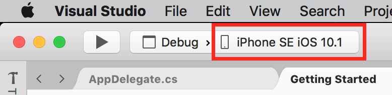
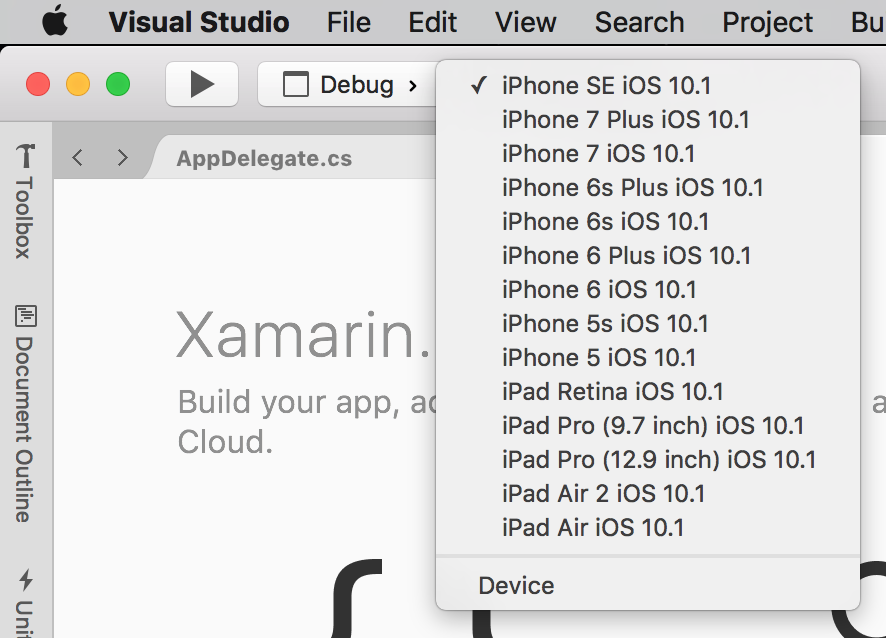
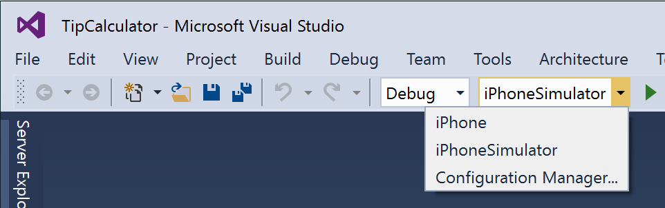
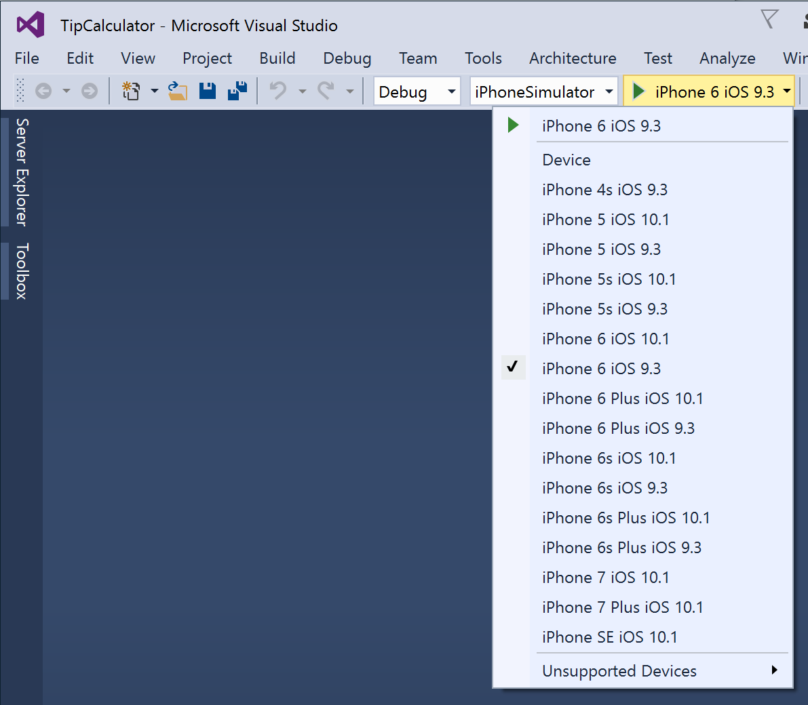

Duration
15 minutes
Lab Goals
The primary goal of this lab will be to walk through the creation of a brand new Xamarin.iOS application using Visual Studio. We will then build and run it using the built-in iOS Simulator from Apple.
High-level steps
This is a group exercise, intended to be done with an instructor in a live session, but you can do the same steps on your own using the following high-level steps to complete the exercise. Step-by-step instructions are provided below that if you need any guidance.
- We will be using the Single View App iOS project template which is included with both IDEs once Xamarin tools are installed (although it's named Single View App (iPhone) in Visual Studio).
- The app will be named TipCalculator and should be placed in a known location such as your desktop.
- On Visual Studio, we will use the iPhone > Single View App (iPhone) template.
- Next, we will compile the application and install it onto the iOS simulator.
- Finally, we will run the application on the iOS simulator. If you are using Windows as your development platform, you will need access (direct or remote) to the Mac in order to see it launch and run.
Steps
Create a Xamarin.iOS application with Visual Studio for Mac
In this section, we will walk through the creation of a new Xamarin.iOS application using Visual Studio for Mac.
- Launch Visual Studio - just double-click on the Visual Studio for Mac icon in your Applications folder on OS X or use Spotlight to find Visual Studio and start it. Visual Studio will open up and look something like the following:
- Next, start the project creation wizard by clicking the New Solution button in the left corner of the welcome screen, or through the File > New > Solution menu choice.
- Select App under the iOS section and the Single View App template from the choices on the right side and click Next to move to the next step.
- Type "TipCalculator" as the app name.
- This should fill in the Identifier field as well, but if it does not, use your website + appname in reverse-DNS notation with the id all in lowercase with no spaces - for example this app will be "com.yourcompany.tipcalculator". We'll talk more about this identifier in another class, but it will be used to uniquely represent your application to Apple when you publish the application.
- Uncheck the iPad option - we only want to target a phone device in this first application to make things a bit simpler, you can leave the target version at it's default value - it is automatically set to the highest supported value available based on the iOS SDKs you have installed.
- Click Next to move to the next page.
-
All of these default should be fine, but you can change them if you like, just make sure the solution and project name does not contain any spaces and that the location is in an easily available place with a reasonable amount of disk space available since the project will be compiled in this spot.
We won't be needing any version control here, but Visual Studio for Mac supports creating the Git infrastructure if you are a fan of that VCS.
If it's present, make sure the Xamarin Test Cloud option stays unchecked - we don't need any UI Tests for this simple app here although if you want to learn about that, check out the XTC102 - Working with Xamarin.UITest class. - Click Create to create the project.


What's been created?
Visual Studio will create a single project in the solution and automatically load it. It should look something like:

Compile the Xamarin.iOS application with Visual Studio for Mac
In this section, we will use Visual Studio to compile our project on the Mac.
- Select one of the simulator styles from the dropdown in the toolbar in Visual Studio:  If you click on the drop-down, it will display a list of available simulator styles: 
-
Click the "Play" button in the toolbar to build and launch the application in the simulator. You can also build from the Build menu or, as mentioned in the discussion, use the
⌘+Baccelerator key (look at the menu drop-down to see the accelerator keys). - The iOS simulator should launch on your Mac and then run your new application. In Visual Studio, it should briefly display a launch screen which was added to your project by the template and then switch to an empty screen which we will be changing shortly. In Visual Studio, you will only see the blank screen.
I don't see all these simulator versions


I am using the Starter Edition and getting a build error
I am getting a compile error indicating I need a business license

 |
Create a Xamarin.iOS application with Visual Studio + Windows
In this section, we will walk through the creation of a new Xamarin.iOS application using Visual Studio on Windows. The screenshots here all depict Visual Studio, but you can use any supported version of the IDE.
- Launch Visual Studio using the Start Menu or icon. Visual Studio will open up and look something like the following:
- Click the New Project link in the top-left corner of the Welcome page to create a new project.
- Select the Visual C# > iOS > iPhone section on the left side of the New Project dialog and then the Single View App (iPhone) template in the list of available templates.
- Name the project TipCalculator and place it into a known location (here we put it on the desktop). You can leave the solution folder as the default value.
- Click OK to create the project.


During the project creation process, you may be prompted to connect to a Xamarin Build Host. If you have trouble, run through the troubleshooting guide.
What's been created?
Visual Studio will create a single project in the solution. Once the project is created, Visual Studio will load it for you. It should look something like this:

Compile the Xamarin.iOS application with Visual Studio + Windows
In this section, we will use Visual Studio to compile our project and then execute it on the Mac Build Host. To complete this part, you will need some type of remote-access to the Mac you are using as a Build host so you can see the simulator.
- First, make sure you have "iPhone Simulator" selected in the build-configuration drop-down.  Next, select one of the simulator styles from the dropdown in the toolbar in Visual Studio: 
-
Click the "Play" button in the toolbar to build and launch the application in the simulator, this is the same button you use to select the simulator style, just click to the left of the down-arrow. You can also build from the Build menu or, as mentioned in the discussion, use the
CTRL+SHIFT+Baccelerator key (look at the menu drop-down to see the accelerator keys). - Next, switch over to your Mac Build Host. The iOS simulator should launch on your Mac and then run your new application. It should briefly display a launch screen which was added to your project by the template and then switch to an empty screen which we will be changing shortly.
I don't see all these simulator versions
|
Summary
Congratulations! You have created a new iOS application, next we will walk through the project together and discuss what has actually been created.